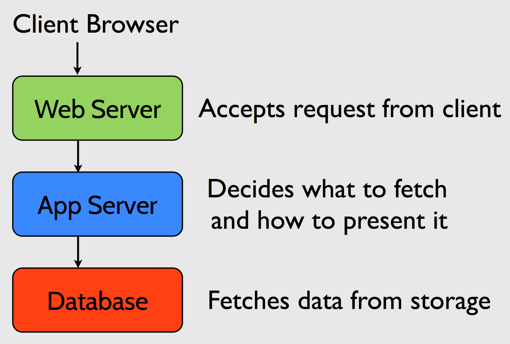
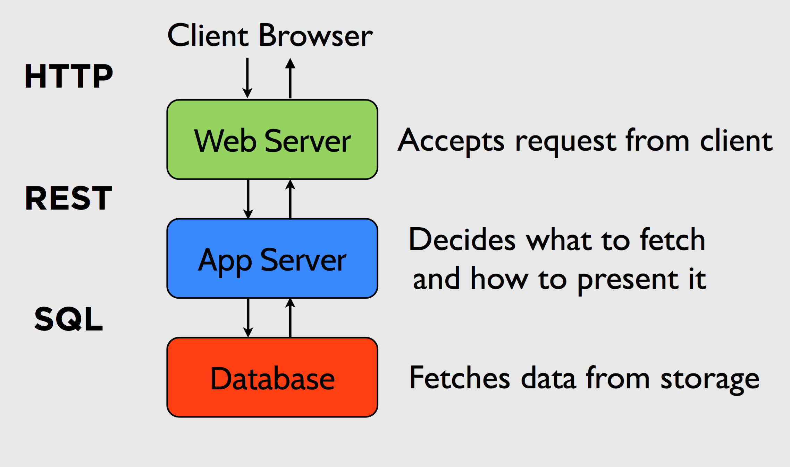
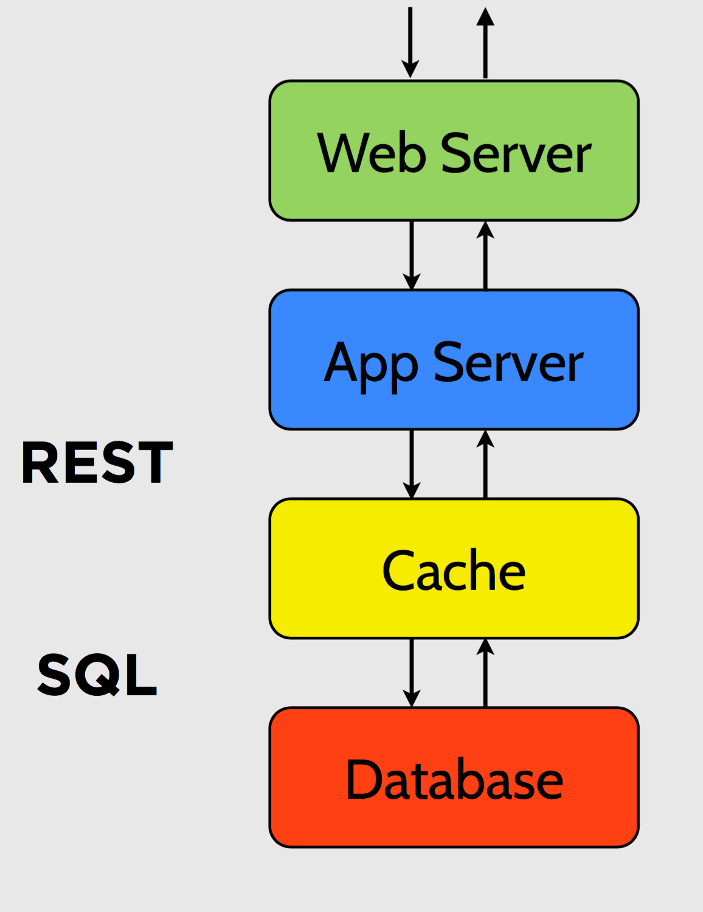
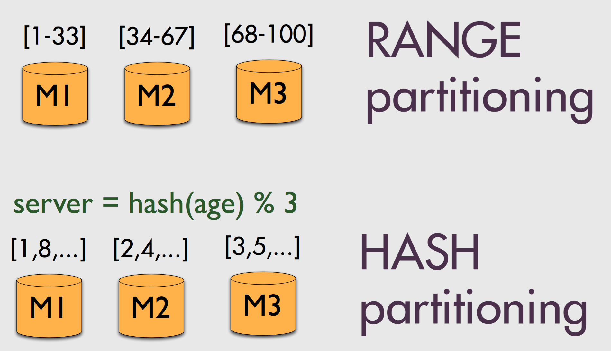

Storage Systems II
Info 253: Web Architecture
Kay Ashaolu
Typical Web Architecture

Typical Web Architecture

Caching

- Reduce load on database by placing cheap copies in front of DB
- Problem?
- Have to keep cache(s) up to date
Statelessness
- Front-end, mid-tier are often stateless--why?
- Simplifies programming, reasoning about services
- DBs can manage complexity of state management
- Promote reuse of complex code
Scaling
- What if data can’t fit on a single server?
- What if a server goes down?
- What if a machine fails completely?
Replication
- Provides durability: don’t lose data
- Provides capacity: multiple servers
- Leads to many interesting challenges
Data Placement
- Which server gets data?
- Assign students to server based on age

Data Placement
- Which servers get what data?
- Range vs. Hash vs. ?
- How many copies of the data?
- Durability: how many failures?
- Capacity: how many requests?
Consistency
- Need to keep replicas up to date
- May be slow or impossible!
- Very expensive if servers are located around the world!
NoSQL
- "New" approach to data storage
- Simple but predictable data models
- Often have to build own features
- Designed for massive scale-out
Key-Value Store
put(key, value) get(value)
- Pros
- Simple API
- Easy to understand performance
- Easy to scale and use
- Cons
- Simple API
- Must handle own schema management
- May need to manually implement search features
Document Store
{
"long_url": "http://www.google.com",
"short_url": "qwelmw",
"hit_count": 2
}
- No predefined schema
- Store handles layout of arbitrary fields
- Examples: MongoDB, CouchDB, Cassandra, Redis
Summary
- Databases designed to solve many common data storage problems
- Storage comes in many flavors; right choice is often specific to use case
- When in doubt, start simple!
- My opinion: start with a RDBMS and learn about your data, move to a DB that better suites your use case afterwards